Title: Health facility registry mobile application (Mobile Facility Mapper) using crowdsourced data, Open Street Maps and the Resource Map OpenHIE Register
1) Executive Summary: One of the primary barriers to health service access and data use in developing countries is lack of publicly available information about services and facilities or a Master Facility List (MFL), particularly in rural settings. Project Balance proposes to develop “Mobile Facility Mapper”, an intuitive, user friendly mobile application that collects crowdsourced facility location and services information by integrating with Open Street Map and Resource Map OpenHIE. Often GPS devices and GIS tools are technical in nature and difficult for non-technical individuals to implement. This application will provide a quick and easy method of capturing health facility information including GPS location, services provided, affiliation, and other meta data, both for public and official consumption. Should the user have suitable access to a national Resource Map OpenHIE registry, they can integrate and update to the national registry with relevant information about the facility. National health ministries and their partners will be empowered with crowdsourced data made available by health professionals from all spheres including donors, partners and national ministry staff.
2) Consortium Team:
a) Profile of organization’s relevant qualifications
Project Balance (project lead) is a small woman-owned company with extensive experience working in low resources settings in Africa and the Caribbean. Our team develops and deploys healthcare, agriculture and social welfare mobile and PC applications to collect and report on data funded by USAID, CDC and other international programs. Our expertise with open source technology tools and developing solutions that address real needs are the ingredients required to bring tangible tools and capabilities to communities in need.
Project Balance excels at project implementation. Our adaptive management and interactive approach optimize the team’s skills and keeps the team focused on delivering quality products and services. Our staff has complementary experience in Monitoring and Evaluation (M&E) and Information, Communications, and Technology. We provide leadership in management, monitoring and evaluation, and organizational support to improve how data is collected, managed and used. To increase data use, Project Balance develops innovative software products that incorporate data quality measures, intuitive user interface design, and solutions that meet the stakeholder requirements. We have successfully directed multi-million, large-scale, multinational, and offshore projects.
InSTEDD (technical collaborator) is a US-based non-profit organization (501.c.3) that designs and uses open source technology to help partners enhance collaboration and improve information flow and knowledge sharing, to better deliver critical services to vulnerable populations. InSTEDD is committed to the user-centered design, agile software development, and building local capacity to use technology for social good. InSTEDD is a founding member and leader of OpenHIE, and a recognized leader in the effective design and development of open source solutions related to GIS, mobile, and lab diagnostic solutions for global health challenges.
DAI (end-user stakeholder-Haiti) is an international development organization that tackles fundamental social and economic development problems caused by inefficient markets, ineffective governance, and instability. We work with a wide range of clients, including national and local governments, bilateral and multilateral donors, private corporations, and philanthropies. DAI’s Haiti HIS team, works closely with the Haitian Ministry of Health to consolidate and integrate Haiti’s disconnected health information assets. The team has both technical and non-technical who will give end-user feedback and help test the proposed application in the field.
b) Profile of relevant experience and examples of related work
As a contractor to DAI (2017-Present) on the USAID Haiti national HIS project (2017-present), Project Balance is assisting DAI in managing the country’s two national instances of DHIS2 with up to 1600 data elements collected monthly from over 800 facilities across all 10 Departments in Haiti. DAI and Project Balance have worked closely with USAID, the MOH and country stakeholders to manage version upgrades, data cleaning, data harmonization as well as implementation of the DHIS2 Tracker system for patient management. Project Balance led a smooth transition from the prior DHIS2 system management team to DAI, working through 10 DHIS2 version updates, major server operating system updates and detailed testing. In addition, Project Balance deployed a public key infrastructure (PKI) system on the public facing servers to secure traffic with TLS and developed and implemented a comprehensive, semi-automated disaster recovery process for the system including a full daily off-site backup of all systems.
Project Balance consulted on AIDSRelief Transition (2011-2016) to provide technical assistance for monitoring and evaluation of the HIV care and treatment program. Our staff worked with Palladium’s Strategic Information team to monitor project performance, provide quality assurance of monthly, semi-annual and ad hoc program reports including the PEPFAR Monitoring, Evaluation and Reports (MER) and identify ways to improve how data is used to inform program planning. There was a significant focus on monitoring and evaluation of the prevention of mother to child transmission (PMTCT) Option B+ model, community-based care and treatment models, and child and adolescent care and treatment. Project Balance was responsible for gathering requirements, business analysis, and managing the development of a ‘real-time’ geographic spatial information system to track PMTCT Option B+ services, pharmaceuticals and other commodities. This application and dashboard interfaces with JSI’s commodity tracking system and allows facilities to report stock levels and early prevention indicators. The interactive dashboard provides key stakeholders including the Ministry of Health (MOH) with indicators targeted at early prevention and interventions to improve patient and program outcomes.
Project Balance was instrumental in managing the development of the SCA application for android tablets (mSCA) under the SIDALE project (2011-2014). The mSCA was developed on a tablet for both routine program monitoring and supporting the long-term sustainability of local facilities. Results from the SCA provide a clear picture of the healthcare site’s needs across clinical, strategic information, and management and finance areas, and allows facilities to prioritize technical assistance with greater emphasis given to low-scoring areas that require more attention. The mobile application allows program managers to conduct the SCA and review results in real-time on their tablet or phone while at the facility. This facilitates the development of action plans immediately following the assessments in order to address challenges and reduce barriers to quality services. mSCA works in online-offline modes to ensure usability at remote and unconnected facilities
Project Balance, with The Palladium Group (2013), consulted on the Clinton Health Access Institute’s facility services map visualization for Zambia (Zambia Health Access Tool). This tool displayed all of the Zambia’s health facilities on a map and allowed users to filter the map meta data to find different hospital types/levels, the entity that managed the facility and the services provided such as ART, PMTCT, EID and CD4 testing. This map was used by the ministry of health to determine gaps in service and future expected catchment areas. Because the map provided a lot of different types of data, usability of the filtering and section features as well as color coding was very important to facilitate understanding the end filtered selections.
c) Qualifications of key members of the proposed project team
Team Member | Role | Organization |
Edward Robinson* | Technical team lead, Software Architect | Project Balance, South Africa |
Michael Lu | Mobile application developer | Project Balance, South Africa |
Kanchan Verma | Senior software tester | Project Balance, India |
Lanette Burrows* | Project manager, public health expert | Project Balance, United States |
Scott Teesdale | Consult on Resource Map application. Liaise with OpenHIE FR group. | Program Development Lead InSTEDD, United States |
Atwood Raphael | Interface with Haitian MOH for facility level testing | Deputy Chief of Party, HIS - Global Health, DAI, Haiti |
Thierry Octave | Application testing from the end user’s perspective | DAI, HIS Systems Analyst, Haiti |
* Indicates key personnel and CV is attached in Annex
d) Number of years in operation
Project Balance has been in operation since 2003, over 15 years.
3) Project Description:
One of the primary barriers to health service access, delivery and data use in developing countries is lack of publicly available information about services and facilities or a master facility list (MFL). “An MFL is the keystone for integrating health information from different actors, programs and monitoring systems.” [[1]] Many health ministries in developing countries have out-of-date or incomplete master facility list or no formal master facility list at all. Reasons for this include lack of access to adequate electronic tools, lack of processes and systems, poor human resource capacity and the huge cost attached to data management. A master facility list is an essential part of any health management information system, disease surveillance system and supply chain management system. [[2],[3]]
Open Street Map is the 'Wikipedia' of maps. It is an open access, crowdsourced spatial database available to everyone. It is particularly popular with humanitarian and international development organizations where it has been used to record, update and present spatial data in a variety of ways including crisis response such as during the 2010 Haiti earthquake (https://bit.ly/2JwkomY). Furthermore, projects such as 'Missing Maps' (missingmap.org) use Open Street Map to pre-emptively map places around the world where the most vulnerable people live in anticipation of crises. Due to the open nature, valuable data can be crowdsourced and made available to anyone requiring it in real time.
OpenHIE (https://ohie.org/) is a free, open, standards-based health interoperability platform which includes a scalable facility registry module, allowing the collection, curation and storage of standardized, up-to-date health facility and resource data at country level. Resource Map (http://resourcemap.instedd.org), developed by inSTEDD, is the latest implementation of the OpenHIE facility registry reference application and has the advantage of being generic and able to record more than just health facility entries. It also has a free online portal hosted by inSTEDD that allows anyone to adopt the product without hosting costs. Although our focus for this project will be mainly health facility related, Resource Map can be implemented in other sectors including agriculture, education, social services, etc. We envisage that the mobile application we are proposing can easily be adapted and redeployed for other sectors in future.
a) Technical approach to the issue and anticipated outcomes
Project Balance proposes to develop an intuitive, user friendly mobile application that collects crowdsourced facility information and integrates with Open Street Map and Resource Map, “Mobile Facility Mapper” (MFM). MFM will provide a quick and easy method to capture critical health facility information including GPS location, services provided, affiliation, etc. both for public and official consumption. The main focus of this application is speed and ease of use which we believe will encourage uptake and use. Users can be casual users who simply want to identify a facility on the map or they could be local or international professionals who want to capture more in-depth details about the facility for public or professional consumption.
Although we envisage the main users (data producers) to be health professionals from national ministries, partners and donors, the application will be available to the general public in the Google Play store and the Apple App store to allow anyone to consume the data using the mobile application. The proposed application will allow for easy capture of health facility location data by import or capture of a geotagged photograph on the user's smartphone. The user can capture additional data such as services provided, affiliation data, contact information, etc. Basic facility information is then uploaded to Open Street Map and made available to anyone for use in the various Open Street Map applications including the public web and mobile apps or in other existing applications via the Open Street Map API. Users will also be able to update existing facilities if changes to existing records are required – e.g. the facility has closed or no longer provides a certain service.
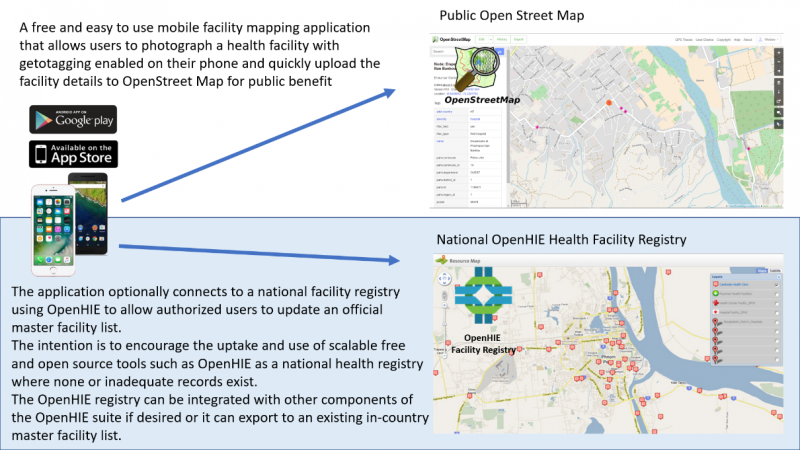
Should the user have suitable access to a national Resource Map registry, they can integrate the update to the national registry with relevant information about the facility. This way, national health ministries will be empowered with crowdsourced data made available by health professionals from all spheres including donors, partners and national ministry staff. The system can be configured to hold uploaded data in a staging database while data curators verify and approve its integration. In addition to a national master facility list, Resource Map may be implemented individually by partner organizations with suitable capacity who want to store more granular detail than the national master facility list provides. They may opt to feed their list of facilities from the master facility list while adding facility details not present in the master facility list.
The system would be available to use as a standalone Open Street Map integrated application or as both Open Street Map and (one or more) Resource Map facility lists.
Countries that lack Master Facility Lists can easily implement Resource Map and have staff capture facility data as they travel to sites using the mobile application. We expect that availability of a mobile application that is both easy to use and integrates with the master facility list will encourage uptake of software such as Resource Map / OpenHIE in countries where no MFL exists. Those that have existing Master Facility Lists using other database tools have the option of implementing Resource Map and exporting crowdsourced data from Resource Map to their existing systems.
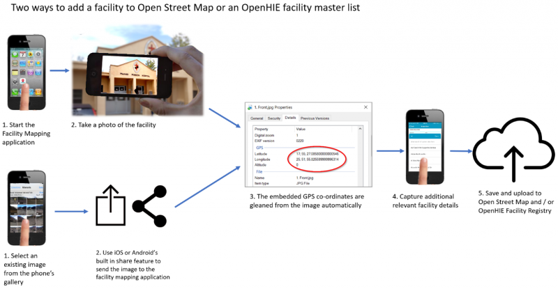
The application will also be useful to local residents and health care workers to search for and locate facilities by service or other category for consultation, admission or referral. The data generated can also be used in decision making by national or partner teams when designing interventions and distribution of services. We propose the application architecture and code base be designed and developed as an open source and flexible system, easy to adapt to other public or private sector industries such as education, agriculture and social services.
We envision that the system will have a discovery service that would, based on the user’s location, query a list of countries (maintained by the OpenHIE community) that have publicly available OpenHIE master facility lists and allow the user to incorporate the MFL data for search and as a layer on their map. They would be able to find facilities based on the specific properties set up in the country-specific MFL (e.g. location, services, etc.).
We propose developing the system using a cross-platform development framework to reduce coding effort and maximize potential by releasing the application on both the iOS and Android platforms. We anticipate that a significant percentage of the contributors from foreign funded organisations may use iPhones or iPads and we did not want them excluded. We have investigated existing applications and platforms for suitability including ODK based systems and existing open source mobile based OpenStreetMap applications:
https://wiki.openstreetmap.org/wiki/Android
https://wiki.openstreetmap.org/wiki/Apple_iOS
ODK has not been coded for iOS and would therefore require significant effort to use for this project and it is for this reason, ODK has not been chosen as the framework of choice. While ODK would provide useful building blocks for the data capture portion of the application, ODK has not been coded for iOS and would therefore require significant effort to use for this project. Maps.ME is a free and open source OpenStreetMap based application designed for iOS and Android with an active repository. We will consider re-using or integrating with the Maps.ME code base, though up front it appears to be a fairly large and mature project and more research is required. The Maps.ME component would mostly provide mapping and navigation service portion to the application. Our contribution would be to integrate OpenHIE and make the submission process health service centric. We will reach out to the Maps.ME team to see if it’s possible to integrate this functionality as a plug-in to Maps.ME rather than a forked application or integrated. Another disadvantage of Maps.ME is that it’s developed using an expensive ($450 per month) IDE – QT.
Our preferred software stack for developing this product is the modern React Native framework which affords the best of both worlds with regards native UI components and a unified code base for cross platform mobile application development. Native UI components provide a superior user experience through a more recognizable and speedier interface which translates to increased application adoption and use. React Native does not require a commercial development environment.
User workflow to add a facility and meta data through Mobile Facility Mapper
- Application startup: Splash screen with options to use the map, add a facility or configure the application
- Configure settings: Allow download of facility data from Open Street Map or Master Facility Lists that you are subscribed to. Allow add / edit of MFL – these could be national ministry repositories or partner repositories, etc. Allow data to be downloaded over WiFi only to prevent unnecessary mobile data charges
- Add a facility – take a geotagged photo of the facility to record location. This can be performed from within the application at the splash screen or directly from the phone’s camera applications
- Add a facility – if adding a facility from the camera application, tapping the share button allows you to send it to the facility mapping application.
- Confirm Location – allows you to visually confirm the location using a satellite map background.
- Capture additional details of the site if you know them
- Select the repositories you wish to submit to. General public will only be allowed to submit to Open Street Maps (they will need to sign up with Open Street Maps). Partners, health workers, ministry staff, etc. will have appropriate rights to one or more facility lists that they can submit to.
- Once submitted, Resource Map curators receive notification (email and mobile notification) to confirm an additional record has been added or an existing record has been updated. They then sign in to the online Resource Map application and confirm or edit the suggested changes in a new staging component of Resource Map and choose to integrate or reject the suggested changes. This allows MFL curators to maintain full control of the data while allowing it to be crowdsourced. This could be a national MFL or a partner’s own facility list.
- Though not included in the wireframe images above, we envisage a search and filter in the mobile application that allows users to find facilities by registry, facility type, Resource Map layer component (e.g. services provided). Existing facility records would also be editable by staff with approved edit accessed
- An additional feature could include linkages to external applications, for example a visitor or supplier could search for a facility they are wishing to travel to and request navigation assistance via Google Maps.
Diagram of the workflow
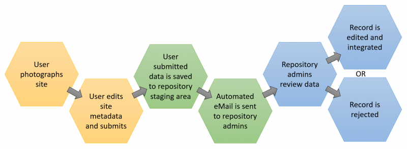
Wireframe/mock up:
Overview of data submission process to national repository
Note to reviewer - Please kindly see the correct placement of these images in the accompanying pdf file.
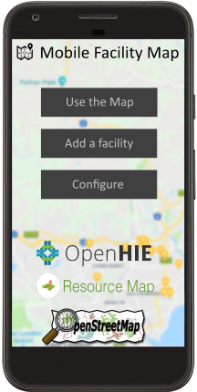
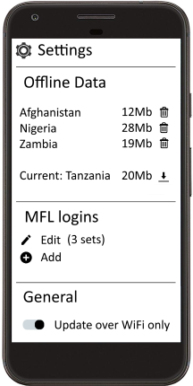
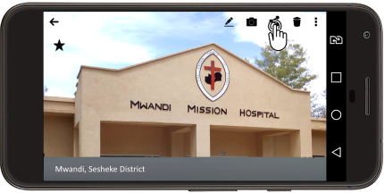
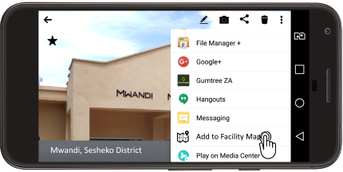
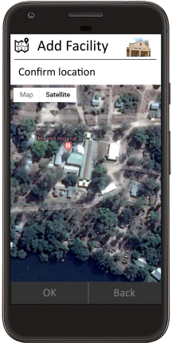
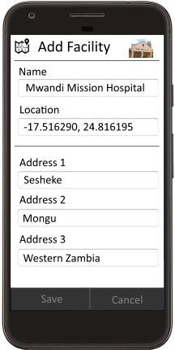
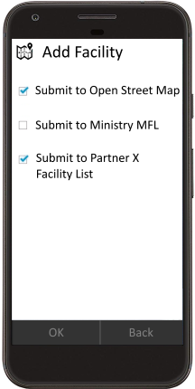
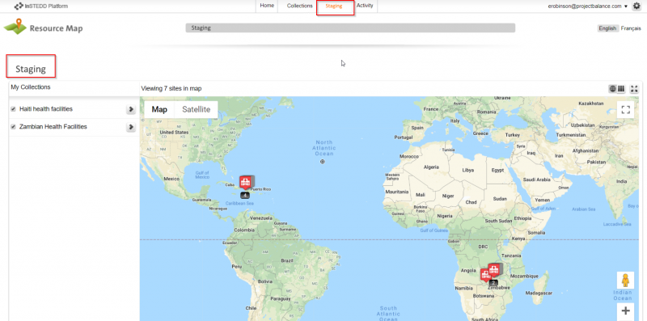
4) Use Cases, User Stories: the list below summarizes the key user stories for the Mobile Facility Mapper (MFM)
- As an end-user, I want to download the MFM application onto my smartphone from the Google Play store or the Apple App store, so that I can use the application locally.
- As an end-user, I want to download a local regional map and facility information, so that I can refer to the information off-line
- As an end-user, I want to log into the MFM application on my smartphone so that I can locate health facilities on the map in either online or offline mode.
- As an end-user, I want to search my locale for a specific facility, so that I can find it on the map in either online or offline mode.
- As an end-user, I want to discover facilities nearby by services provided in either online or offline mode, so that I can find an appropriate facility to visit.
- As an end-user, I want to get the driving directions from my current location to a specific facility, so that I can travel to the facility in either online or offline mode.
- As an end-user, I want to add a new facility with a geotagged photo, so that I can contribute accurate local information.
- As an end-user, I want to add a geotagged photo that has been previously saved to my smartphone of a new or existing facility, so that I can contribute accurate local information.
- As an end-user, I want to enter meta data (services, hours open, etc.) about an existing facility in a form on my smartphone, so that I can contribute accurate local information.
- As a facility administrator, I want to approve, edit or delete a facility or updated information submitted by an end-user about a new or existing facility, so that I can curate information for public display.
Feature list:
- Download the application from the Google Play Store / Apple App Store
- Link my Open Street Map account and / or one or more OpenHIE / Resource Map based facility registry accounts within the application;
- Display facilities with their meta data on an Open Street map based tile layer using Open Street Map data or OpenHIE / Resource Map based facility registry data.
- Search for a facility with a particular location, services type, hours open, etc.
- Upload a geotagged image, add meta data about a facility and create a new facility record to be submitted to OpenStreetMap and an OpenHIE / Resource Map based facility registry.
- Add or edit meta data about an existing facility record and submit the updated record to OpenStreetMap and / or an OpenHIE / Resource Map implementation.
- In the Resource Map web interface, review, update, accept or delete data submission by an end users.
5) Use of Digital Health Technologies:
The application will use conventions and standards included in Resource Map which is built on OpenHIE facility registry. Standards and conventions implemented in OpenHIE / Resource Map:
- mCSD – mobile Care Services Delivery Profile. The mCSD, developed by Integrating the Healthcare Enterprise® (IHE), is a standard that supports queries across related directories containing data about organizations, facilities and services.
- FHIR (pronounced ‘fire’). Fast Healthcare Interoperability Resources is a standard for exchanging healthcare information electronically. It was developed based on emerging industry approaches to health data exchange around the 20+ year old HL7 standard. It has emerged as a standalone data exchange standard but can be integrated with other existing standards. It is open source and does not require HL7 membership to use and implement it. Generally speaking, it is a machine-readable implementation of a REST API server specifically geared towards health information systems. The system will communicate CSD entity data using FHIR.
The OpenHIE CSD and FHIR implementations as included will be leveraged for various functions of addressing entities and communicating data between Open Street Maps and Resource Map facility list implementations.
6) Community Feedback:
Project Balance has invited DAI, who works closely with the Ministry of Health in Haiti on harmonizing and maintaining health information systems, to provide end-user input and testing of the Mobile Facility Mapper tool. Haiti does not have a Master Facility List application; they maintain their master facility list through DHIS2. As part of this project, some or all of the facilities in DHIS2 will be loaded into the Mobile Facility Mapper tool. This will be a starting point for the crowdsourcing data collection. DAI will review the requirements from an end user’s perspective and also what is needed in Haiti. The DAI team members will provide feedback on the ease of use, accuracy of the data collection mechanism and how the data can be administered through a simple version of the OpenHIE Registry.
DAI has both technical and programmatic experience and are ideal partners to give user feedback. Furthermore, Haiti is a challenging environment to work in and collect information so the testing will be realistic and uncover any major user experience issues or defects.
Project Balance has joined the OpenHIE Facility Registry community and will solicit ideas and reach out for help where during the requirements phase and report to the group at key milestone points. Furthermore, we have reached out to InSTEDD who is heavily involve with managing the OpenHIE FR community to aid in soliciting ideas and feedback from the group to help us build a quality tool that meets standards and can be further enhanced by others. Project Balance will publish the Mobile Facility Mapper application as an open source contribution to this repository. This team will follow any required or recommended coding rules to conform to the community’s requirements.
7) Self-Assessment on the Global Goods Maturity Model:
Link to OpenHIE / Resource Map assessment here
8) Digital Health Atlas:
A preliminary, published Digital Health Atlas project has been published and can be found at this URL: https://digitalhealthatlas.org/app/175/edit-project/publish/
9) Workplan and Schedule:
Below is the proposed workplan and schedule.
The workplan is separated by work bundles or packages. Please see the number of days per work bundle. We estimate this project to take about 6 months – 5 months to complete the key deliverables and one month of testing, polishing and defect fixing.
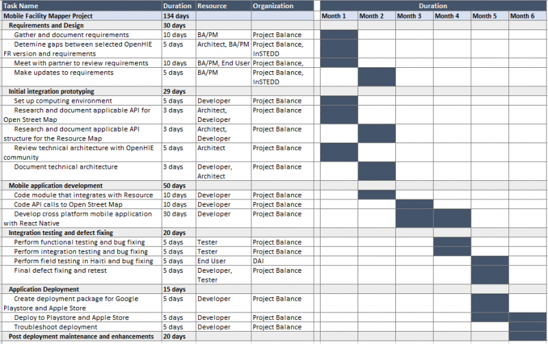
RACI Chart – This chart shows the responsibly matrix by project phase
Key Activity | Ed | Mike | Kanchan | Lanette | Scott | Atwood | Thierry |
Requirements and Design | R | C | I | R, A | C | I | I |
Initial integration prototyping | A | R | I | I | C | I | I |
Mobile application development | A | R | I | I | I | I | I |
Integration testing and defect fixing | A | R | R | R | I | R | R |
Application Deployment | R, A | R | R | C | I | C | C |
Post deployment maintenance and enhancements | R, A | R | R | R | I | C | C |
R = Responsible; A= Accountable; C = Consulted; I = Informed
7) Project Deliverables - This chart shows the project deliverables by phase and by consortium partner with timeframes per phase.
Key Activity | Deliverables | Months from Start |
Requirements and Design | Data dictionary, Data entry flow, User interface wireframe, risk mgt plan, communication plan | 1.25 months from start |
Initial integration prototyping | Technical design document, API integration documentation for Resource Map and Open Street Map, database updates documentation (ERD) | 1.25 months from start |
Mobile application development | Mobile application, test cases, test list | 3.5 months from start |
Integration testing and defect fixing | UAT test cases, UAT result, defect tracking | 4.5 months from start |
Application Deployment | Deployment instructions, package scripts | 5.1 months from start |
Post deployment maintenance and enhancements | Enhancement list, development schedule, defect list, defect tracking | 6 months from start |
11) Tagging:
- Open Street Map
- OpenHIE
- Resource Map
- Identification registries and directories
- Community-based information system
- Facility management information system
- Geographic information system (GIS)
- Open Source
- Crowdsource
- Master facility list
- Mobile
12) 2-sentence overview:
A) A description of your global good for a non-technical audience.
Mobile Facility Mapper is a map-centric mobile application that allows easy capture of GPS location, services provided and other health facility information by a large number of individuals or organizations (crowdsourced) for the common goal of updating a national registry for use by local residents, healthcare workers and other organizations. A publicly available map will display the location of facilities by service or other category for consultation, admission, referral or other general public use.
B) What this investment from Digital Square will specifically fund.
Digital Square will fund the development of an intuitive, user friendly mobile application that integrates with the OpenHIE based Resource Map and Open Street Map so that facility data including location, services and affiliation of health facilities can easily be updated for public, private, NGO and government use. This solution leverages crowdsourcing to continually update a standards based master facility list that can be used by other software applications and organizations as the most complete and accurate facility list.
Annex A – Key Personnel Resumes
Lanette Burrows, MPH, PMP
SUMMARY OF QUALIFICATIONS
Experienced program manager and certified PMP with over 15 years of experience providing leadership in program development, information, communication and technology, public health, and organizational support of international and domestic community development projects.
- Accomplished in project development and implementation; significant experience in human resources management to ensure team collaboration in remote settings
- Proven success in diverse, multicultural settings and garnering senior and executive level support for strategic initiatives
- Expert in budgeting and financial management; significant operations experience to ensure results are met on time and within budget
- Outstanding problem solving skills; flexible; able to handle multiple tasks in fast-paced work environments and work collaboratively with other team members
- Experience in grant writing, growing existing contracts and fostering relationships to win new business
- Critical thinker with a focus on evidenced based decisions and ability to design systems that collect quality data and manage data with the intent to improve use of the information
- Global work experience in Burkina Faso, Ethiopia, Guyana, Haiti, India, Kenya, Nigeria, Rwanda, South Africa, Swaziland, Tanzania, Uganda, Zambia, and Zimbabwe
INTERNATIONAL PROGRAM MANAGEMENT EXPERIENCE
Seasoned professional with extensive program management and operations capability executing multi-million, multi-country, and complex projects.
- Opened 10 offices in Africa and the Caribbean which included facilitation of local registration, leasing office space and setting up utilities, infrastructure at office, opening bank accounts, ensuring security measures, developing operations policies and manuals, vehicle leasing, hiring technical and operations staff, and payroll
- Effectively executed close out of large and small CDC, USAID, HRSA funded projects across multiple countries and ensured sustained knowledge management of project activities and reports
- Developed staff professional development plan and performance review templates for field-based teams; facilitated performance improvement and professional development discussions with staff
- Created interview guides and practical written interviews to improve our hiring process; carried out hiring and terminations for operations and technical staff
- Developed budgets in line with the scope of work and to ensure project results; managed burn-rates and forecasts to limit cost overruns and under-spending
- Reviewed and approved monthly expenditures and invoices specifically reviewing for US government cost principals
- Forecasted level of effort for more than 85 staff working across multiple countries and projects; developed tools and updated processes on a quarterly basis
- Development and review of policies and standard operating procedures in a variety of topics ranging from ensuring privacy of protected health information to child protection
- Conducted in depth contract negotiations that spanned a wide range of areas including: reporting, audit, intellectual property, budget, budget flexibility and payment terms, scope of work and deliverables, and procurement
PROJECT BALANCE, LLC Greater Boston 2014 – Present
Managing Partner, Owner
- Small woman owned company focused on supporting organizations to improve how they collect, manage, and use data through process improvement and software development. Provide excellence in business analysis, development of visualizations, requirements gathering and documentation, project management, and software development. Work collaboratively with domestic and international clients to execute projects to help our clients deliver and obtain results.
- Strong experience in developing data capture tools and software with reporting and dashboards for decision support. Work together with clients to critically analyze and define business rules for data transformation and reporting.
- Develop and manage a large data warehouse; map the extract, transform and load (ETL) process from five source databases and create business rules. Manage changes and enhancements to ensure availability of critical reports and information.
- Provide quality assurance for software development projects including test plan and test case development, execution of test plans.
- Manage the development of an interactive analytics tool and dashboard to slice and filter data for over 500,000 longitudinal records. Work collaboratively with clients to identify key stories for visualizations and uncover unanticipated trends. Review data and processes for data quality issues and identify mitigation strategies.
- Client list available upon request
FUTURES GROUP Washington, DC 2003 – 2014
Project Director & Principal Investigator
- Led and oversaw plans and execution of annual $7 million contract to provide monitoring and evaluation (M&E) and health informatics solutions for HIV care and treatment in ten countries. Managed up to 15 additional multi-country health informatics projects simultaneously.
- Supervised team of approximately 85 to build capacity at over 240 health facilities via training and technical assistance; improved clinical and program outcomes by enabling collection, analysis, and use of strategic information
- Directed development and execution of revenue, program, and operational activities; monitored activities and provided guidance to ensure results were achieved and performance targets met
- Established key success indicators and managed trade-offs between scope, quality, time and cost
- Coordinated development of International Quality Solutions (IQSolutions); IQSolutions (www.iqstrategy.net) is a library of electronic medical records, mhealth applications, dashboard solutions and data reporting tools that provide the key components for adaptive patient management, healthcare quality and clinical sustainability. IQCare and IQSMS received honorable mention in the 2010 Stockholm Challenge. Successfully managed an off-shore development team to develop software that meets field and donor requirements. IQSolutions is currently implemented in 10 countries across more than 700 facilities.
- Managed annual budget and oversaw contract compliance and assured fiscal responsibility; experience in cost reimbursable, time and materials, and firm-fixed price budgets
- Received spectacular Service Award in 2010 from the AIDSRelief project for exceptional achievement, innovation and leadership for the success of the project
Senior Project/Technical Manager
- Managed field and headquarters operations and reporting for annual $2 million contract
- Oversaw short term technical assistance, mobilized resources to the field, maintained partner relationships with the prime grant recipient and other partners, and ensured accurate client reporting
- Supervised activities and supported field level project processes in knowledge management, finance, work plan development, reporting, materials development, and program development
- Directed technical activities, developed training modules and manuals, assisted in data analysis, and developed and implemented health management and information systems
- Collaborated with Points of Service (POS), consortium members, and internal teams to develop system requirements for the patient monitoring system
- Led the development of a joint needs assessment tool and coordinated data management and development of an assessment database
Business Development Associate
- Coordinated proposal development including technical, non-technical and cost components; collaborated on five successful applications
- Researched development opportunities, collaborated with staff to write and submit unsolicited proposals, and helped maintain and update corporate files and capability statements
- Developed cost applications for up to $19 million
- Backstopped a regional HIV/AIDS policy and advocacy project including financial administration and initiating tracking systems
PLANNED PARENTHOOD OF MARYLAND Baltimore, MD 2003
Grants Research Intern
- Researched foundations for funding reproductive health programs, organized previous research material, and developed a database for storage of this information
- Evaluated current budgets and action plans to understand the significance of foundation grants
- Wrote proposals for Adolescent Teen Services, Medical Services & Latino Outreach
- Attended Corporate and Foundation Grant Writing Workshop sponsored by Johns Hopkins Medical Institute
- Presented funding opportunities to Education and Development Departments
BOSTON PUBLIC HEALTH COMMISSION - AIDS PROGRAM Boston, MA 2001-2002
Program Coordinator
- Provided technical and monitoring assistance in the implementation of outcome measures and assured that funded programs attained contracted goals and objectives
- Developed procedures for continuous monitoring of activities including program site visits.
- Planned and developed monitoring and reporting systems for performance of funded programs
- Prepared quarterly and annual reports on program activities
- Worked collaboratively with grant and fiscal staff to ensure system accountability
- Assisted in preparing the Ryan White CARE Act Title I application and local RFPs
PEACE CORPS VOLUNTEER Burkina Faso, West Africa 1999-2001
Community Health Educator
In addition to daily responsibilities in village health clinic and pharmacy:
- Managed the implementation of a pharmaceutical depot -- from creation of project proposal to completion of construction including writing successful grant funded by USAID thru Peace Corps
- Launched a hygiene and sanitation project with regional hospital to provide education program and complete construction of latrines in six villages
- Coordinated a three day regional conference in which 26 girls at the secondary school level participated in discussions on self-esteem, gender roles, female reproduction, and career orientation
- Wrote and implemented yearly action plan and budget for the health clinic and pharmacy; tracked performance of health clinic through weekly, monthly, and annual reports
- Developed project description and budget used for successful funding solicitation through the Peace Corps Partnership Program
- Conducted assessment survey in a rural village to identify health care priorities and aided the health staff to perform six social mobilization activities on these needs
- Enabled health clinic to record and organize data for baby weighing, vaccinations, pre- and post-natal consultations, and family planning consultations
HALLMARK HEALTHCARE Saugus, MA 1998-1999
Financial Counselor
- Evaluated clients’ financial capability to pay for medical bills and designed sliding fee payment options
- Authorized optional payment plans and reductions in bills for clients showing need
- Counseled and aided patients to find health insurance and verified health insurance information
PLANNED PARENTHOOD OF BOSTON Boston, MA 1998-1999
Clinical Assistant
- Counseled patients on decisions regarding pregnancy outcomes, including abortion procedures and contraception options; screened vital signs
STOCKHOLM WOMEN’S STUDY CENTER Stockholm, Sweden 1997
Volunteer
- Researched literature on women's issues of abortion, equal pay, job opportunities, and maternity leave
PROJECT MANAGEMENT PROFESSIONAL (PMP), Project Management Institute 2008
PMP Certification
JOHNS HOPKINS UNIVERSITY, Bloomberg School of Public Health Baltimore, MD 2003
Master of Public Health, Concentration in International Health,
PEACE CORPS TRAINING Bobo-Dioulasso, Burkina Faso 1999
Intense training in community health development, program planning, French, & culture
COLGATE UNIVERSITY Hamilton, NY 1998
B.A. Major in Psychology; Minor in Education
STOCKHOLM UNIVERSITY Stockholm, Sweden 1997
Advanced Placement Swedish Program, Junior Year Abroad
PUBLICATIONS, CONFERENCE ABSTRACTS & POSTERS
M. Etienne, L. Burrows, B. Osotimehin, T. Macharia, B. Hossain, R. R. Redfield, A. Amoroso. “Situational analysis of varying models of adherence support and loss to follow up rates; findings from 27 treatment facilities in eight resource limited countries” Tropical Medicine & International Health. Volume 15, Issue 1, pages76-81.
P. Bass, L. Burrows, B. Jefferson. “Building Sustainable Strategic Information Systems in Low Resource Countries” Abstract accepted for the 2009 Unite for Sight Global Health Conference.
P. Bass, L. Burrows, B. Jefferson (presenter). “Building Sustainable Strategic Information Systems in Low Resource Countries” Presented at the 2008 Global Health Conference, Washington, DC.
I. Wanyeki, R. Ng’ethe, W. Kamau, L. Burrows. “Improved Data Use Minimizes ART Defaulter Rates” Poster at the 2008 International AIDS Conference, Mexico City, Mexico.
I. Wanyeki, L. Sekimpi, J. Balaba, T. Tulli, M. Nawa, L. Burrows. “Cohort Analysis of 12 Month ART Mortality and Retention Rates Across 11 Facilities in Africa” Poster at the 2008 International AIDS Conference, Mexico City, Mexico.
W. Kamau, R. Ng'ethe, I. Wanyeki, E. Robinson, S. Rana, B. Jefferson, L. Burrows, P. Bass. “Adaptive Management Leading to Enhanced Data Use Among Clinical Staff for Informed Clinical Decision Making” Poster at the 2008 International AIDS Conference, Mexico City, Mexico.
M. Etienne, L. Burrows, B. Osotimehin, T. Macharia, A. Amoroso. “Effect of Varying Models of Adherence Support on Lost to Follow Up Rates; Findings from 34 Treatment Facilities in Eight Resource Limited Countries” Poster at the 2007 International AIDS Conference, Toronto, Canada.
Y. Shimada, L. Burrows, B. Jefferson, P. Bass, F. Cleghorn. “Providing Sustainable Solutions for Patient Monitoring and Management: The AIDSRelief Experience” Poster at the 2006 Annual PEPFAR Meeting, Durban, South Africa.
Project Balance, Austin, TX 2004 to 2016
Technical Director East London, South Africa
Design of bespoke information systems interventions for international development in various sectors. Requirements and existing systems assessments for intervention planning. Design, deployment and management of secure cloud services in various contexts including international and in-country (emerging economy context). Cybersecurity analysis and implementation.
The Palladium Group, Washington DC 2004 to 2016
Regional HMIS Advisor / Country representative East London, South Africa
Information system design for various sectors in emerging economies including healthcare, social services, agriculture and education. Management of a software development team and country office in South Africa. Resource planning and implementation of international information systems projects across Africa, Middle East and the Caribbean. Worked on the 9 country CRS led AIDSRelief project from 2004 to 2010.
Networks, 1997 to 2004
Proprietor East London, South Africa
Design and implementation of server and network solutions – LAN/WAN. Hardware, networking and operating systems support (Windows Server, Novell Netware, Linux). PC and network sales and support.
Coopers and Lybrand 1995 to 1997
Systems Administrator East London, South Africa
Server deployment, maintenance and support for Coopers and Lybrand’s Eastern Cape region (4 offices). Client and internal systems support. Novell Netware, Windows, DOS, Linux, OS/2 and Lotus Notes deployment and support.
SC Computer Systems CC 1994 to 1995
IT Support Engineer
PC hardware, software and networking installation and support (DOS, Windows, Netware).
- Information systems architecture, design, documentation, deployment and support in developing world context including occasionally connected or offline environments.
- Innovative use of technology to solve problems in low resource environments.
- Systems integration and data exchange.
- Design and deployment of analytics solutions including web based dashboards.
- Field systems assessments.
- Mentoring and capacity building.
- Working with staff at various levels in different political contexts.
- Extensive experience in Health Information Systems, particularly HIV Care.
- Android Development
- .NET Development (C#),
- Web Development (ASP.NET, MVC),
- Forms Development,
- SQL Server Development (SSIS),
- UML and Requirements elicitation,
- Microsoft Visual Studio
- SQL Server Management Studio
- MySQL
- Maps and Charts Development (OpenLayers, Chart.js)
- GIMP
- Inkscape
- Adobe Premiere Elements
- Drones for International Development: A Paradigm Shift Ahead for the Cyber-Physical Gap in International Humanitarian Aid
- IQMerge: Improved reporting and data use through aggregation of patient level indicators from IQChart ART scale up potential in the Nyamasheke district of Rwanda
References
[1] https://www.measureevaluation.org/resources/publications/fs-14-134b
[1] http://www.who.int/healthinfo/MFL_Resource_Package_Jan2018.pdf
[1] https://www.ncbi.nlm.nih.gov/pmc/articles/PMC5266756/